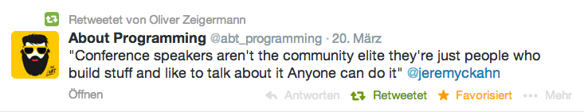

My philosophy for talks and workshops

What is an Enterprise Project?
- is important for a company's success
- lives for many years
- has to deal with a number of team members > 1
- team members will change, maybe completely
Let us ask ourselves
What is our motivation for JavaScript in the Enterprise world?
- It is the hype, dude!
- I want faster development
- We are bored with Java and want to try something new
- JavaScript is the only language that runs in every browser
- Anything else?
What is the problem with JavaScript in Enterprise Projects?
How do I keep my codebase maintainable?
- How do I modularize my code?
- How do I keep my code readable?
- How do I keep my code analyzable?
- How do I keep my code refactorable?
- How do I test my code?
- Is CI possible?
Frameworks
- What standard frameworks should I use?
- Will the frameworks I have chosen be maintained for long enough?
- Will future version be as backward compatible as the Java ones?
Integration with Legacy
- Many times you do not start from scratch, but have legacy systems
- Legacy might be Java systems ;)
- How do I resue existing Java (server-)code?